智能体使用 I：Claude Code 是如何工作的
LLM 基础与智能体循环；拆解 Claude Code 的上下文、工具、权限与会话机制，以及高效使用它的方法。
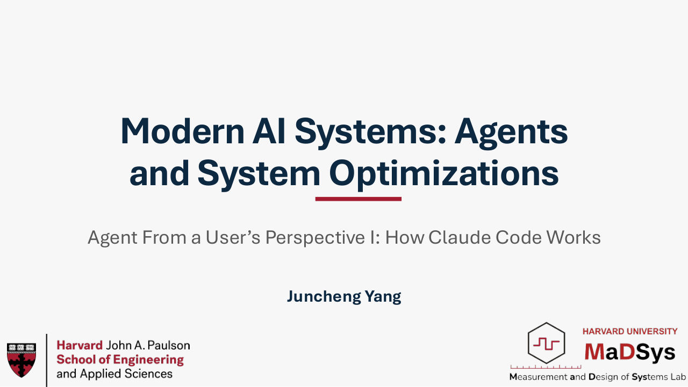
现代 AI 系统：智能体与系统优化
Juncheng Yang
用户视角下的智能体 I：Claude Code 是如何工作的
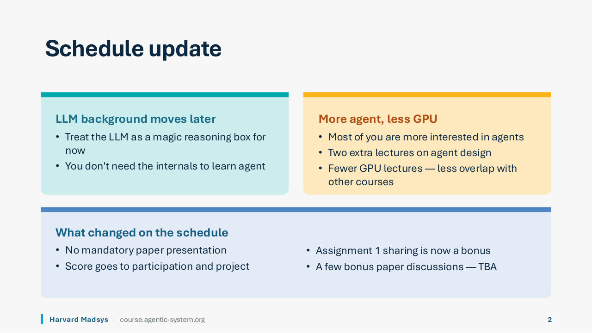
课表调整
LLM 背景知识挪到后面讲
- 暂时把 LLM 当作一个“会推理的魔法黑盒”
- 学习智能体并不需要先懂它的内部原理
多讲智能体，少讲 GPU
- 大多数同学对智能体更感兴趣
- 新增两次智能体设计课
- 减少 GPU 课——与其他课程的重叠更少
课表上的变化
- 论文展示不再强制
- 这部分分数转给课堂参与和课程项目
- 作业 1 的分享改为加分项
- 另有几次论文讨论加分机会——待定
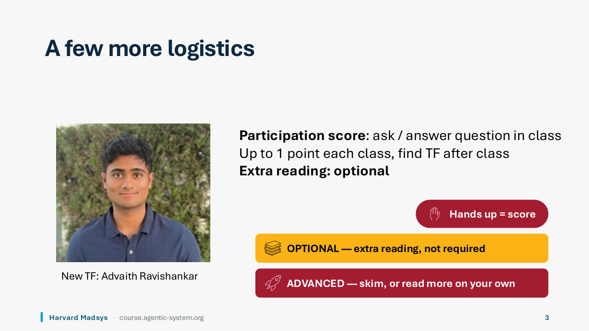
其他几件事
- 新助教：Advaith Ravishankar
- 课堂参与分：在课上提问/回答问题，每节课最多 1 分，课后找助教登记
- 举手 = 得分
- 拓展阅读：选读
- OPTIONAL（选读）——额外阅读，不作要求
- ADVANCED（进阶）——略读，或自行深入
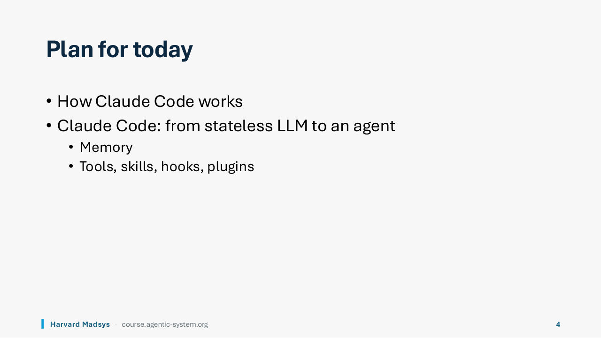
今天的安排
- Claude Code 是如何工作的
- Claude Code：从无状态的 LLM 到智能体
- 记忆
- 工具、Skills、Hooks、插件
当你在 Claude Code 里输入一个提示词时，发生了什么？
举手 = 得分
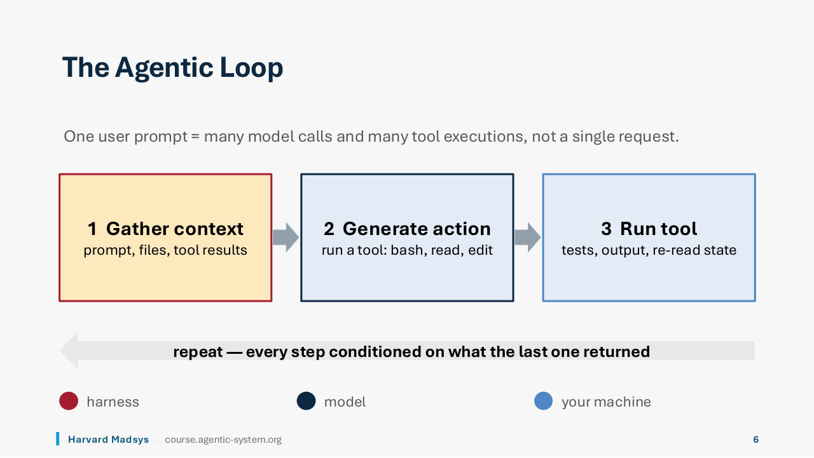
智能体循环（The Agentic Loop）
- 收集上下文：提示词、文件、工具结果
- 生成动作：运行一个工具——bash、read、edit
- 执行工具：测试、输出、重新读取状态
循环往复——每一步都以上一步返回的结果为条件。
（图：三方角色——Harness、模型、你的机器）
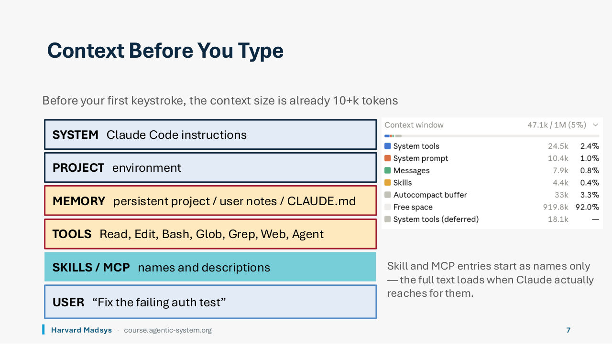
你还没打字，上下文就已经有了
在你敲下第一个键之前，上下文已经有 1 万+ token：
- SYSTEM：Claude Code 的系统指令
- PROJECT：环境信息
- MEMORY：持久化的项目/用户笔记 / CLAUDE.md
- TOOLS：Read、Edit、Bash、Glob、Grep、Web、Agent
- SKILLS / MCP：名称与描述
- USER：“修复那个失败的鉴权测试”
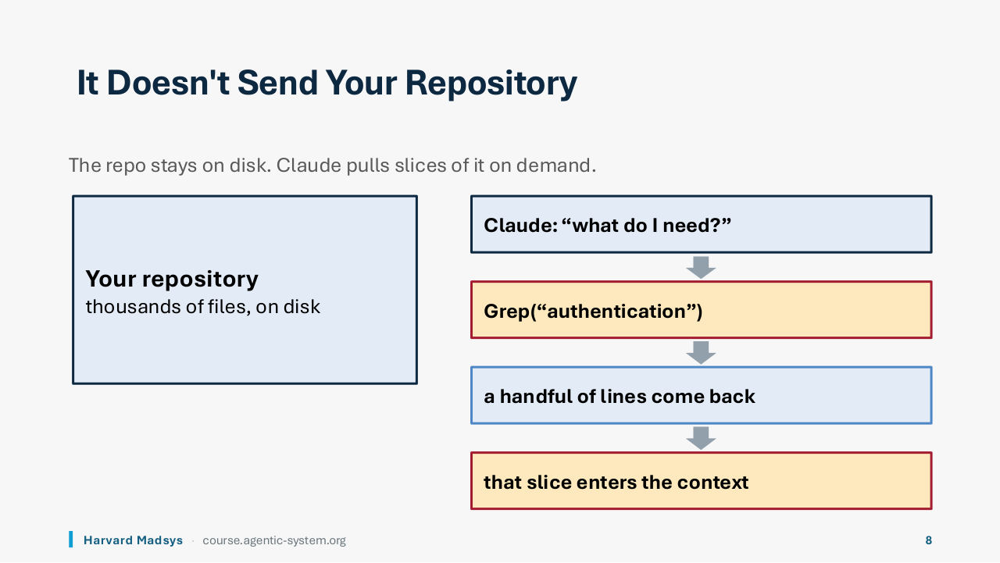
它不会把整个仓库发出去
仓库留在磁盘上，Claude 按需拉取其中的片段。
- 你的仓库：成千上万个文件，在磁盘上
- Claude：“我需要什么？” →
Grep("authentication") - 返回寥寥几行 → 这一片段进入上下文
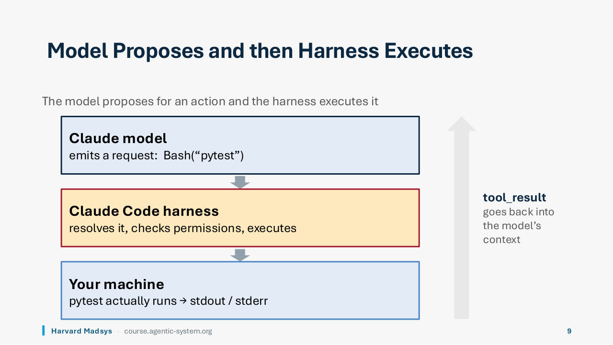
模型提议，Harness 执行
模型提出一个动作，由 Harness 来执行它：
- Claude 模型：发出请求
Bash("pytest") - Claude Code Harness：解析请求、检查权限、执行
- 你的机器：pytest 真正运行 → stdout / stderr
- tool_result 回到模型的上下文中
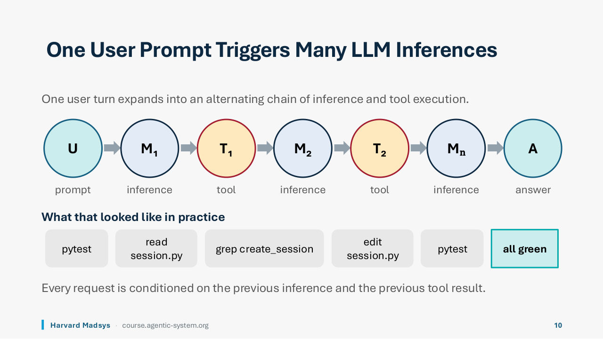
一条用户提示词会触发多次 LLM 推理
一个用户轮次会展开成“推理—工具执行”交替的链条：
U 提示词 → M₁ 推理 → T₁ 工具 → M₂ 推理 → T₂ 工具 → … → Mₙ 推理 → A 回答
实际过程大概是这样：
pytest → 读 session.py → grep create_session → 编辑 session.py → pytest → 全部通过
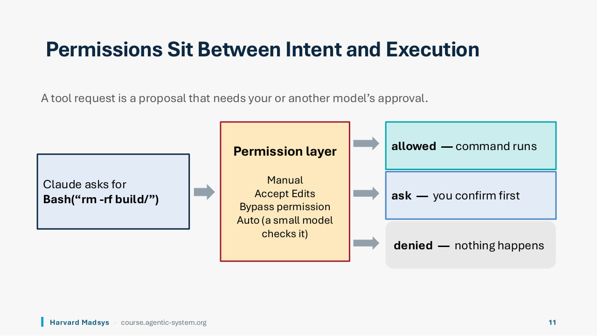
权限位于“意图”与“执行”之间
工具请求只是一个提议，需要你（或另一个模型）批准。
- Claude 请求：
Bash("rm -rf build/") - 权限层的几种模式：手动 / 自动接受编辑 / 跳过权限 / Auto（由一个小模型来检查）
- 结果：允许——命令执行；询问——先由你确认；拒绝——什么也不发生
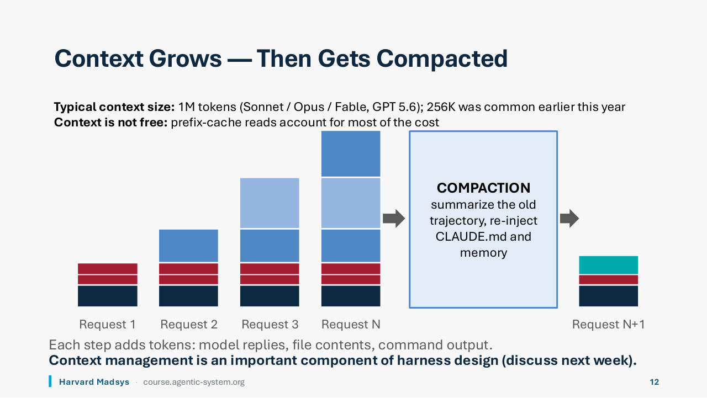
上下文不断增长——然后被压缩
每一步都会增加 token：模型回复、文件内容、命令输出。
请求 1 → 请求 2 → 请求 3 → … → 请求 N → 压缩（COMPACTION） → 请求 N+1
- 压缩：总结旧的轨迹，重新注入 CLAUDE.md 和记忆
- 上下文管理是 Harness 设计的重要组成部分（下周讨论）
- 典型上下文大小：100 万 token（Sonnet / Opus / Fable、GPT 5.6）；今年早些时候常见的是 256K
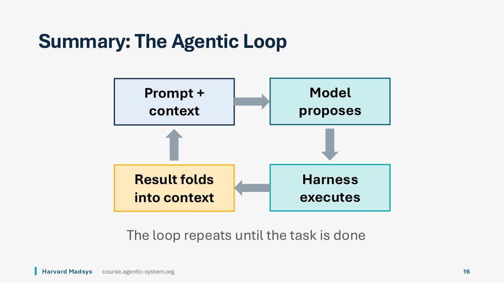
小结：智能体循环
提示词 + 上下文 → 模型提议 → Harness 执行 → 结果并入上下文
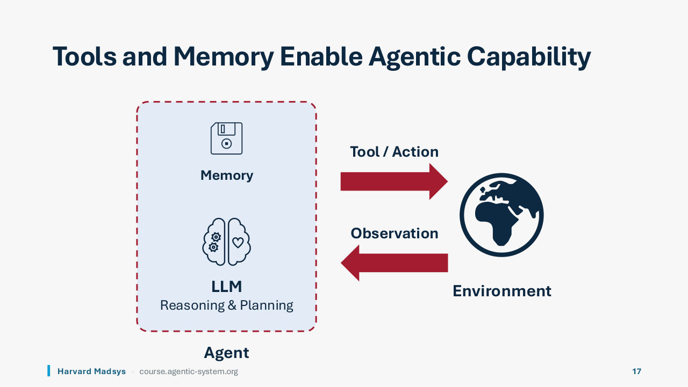
工具与记忆赋予智能体能力
（图：智能体 = LLM + 记忆 + 推理与规划；通过工具/动作作用于环境，从环境获得观察）
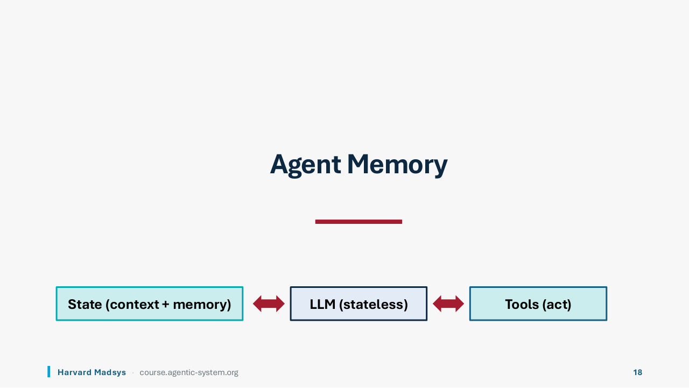
智能体的记忆
- LLM（无状态）
- 工具（行动）
- 状态（上下文 + 记忆）
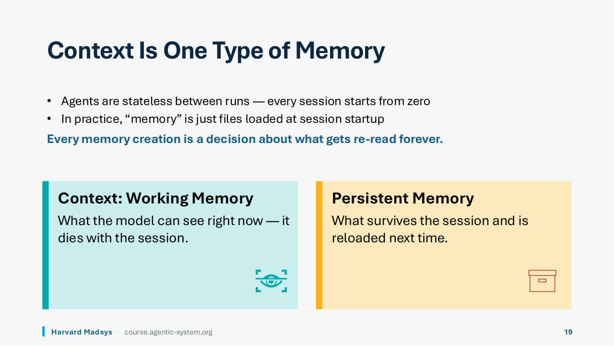
上下文是记忆的一种
- 智能体在两次运行之间是无状态的——每个会话都从零开始
- 实践中，“记忆”不过是在会话启动时加载的文件
上下文：工作记忆——模型此刻能看到的东西，随会话结束而消失。
持久记忆——在会话结束后保留下来、下次重新加载的东西。
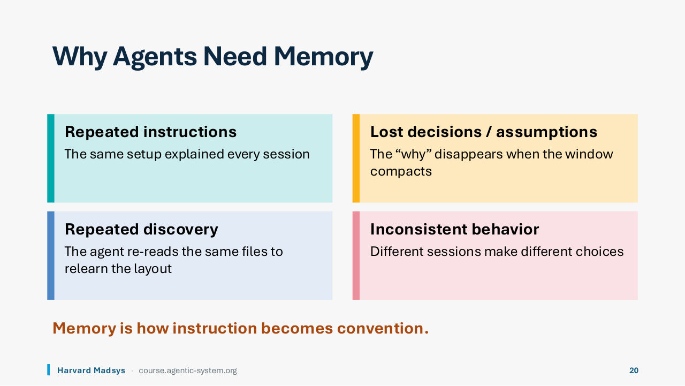
智能体为什么需要记忆
- 重复的指令：每个会话都要把同样的配置解释一遍
- 丢失的决策/假设：窗口一压缩，“为什么”就没了
- 重复的探索：智能体反复读同样的文件来重新熟悉项目结构
- 行为不一致：不同会话做出不同的选择
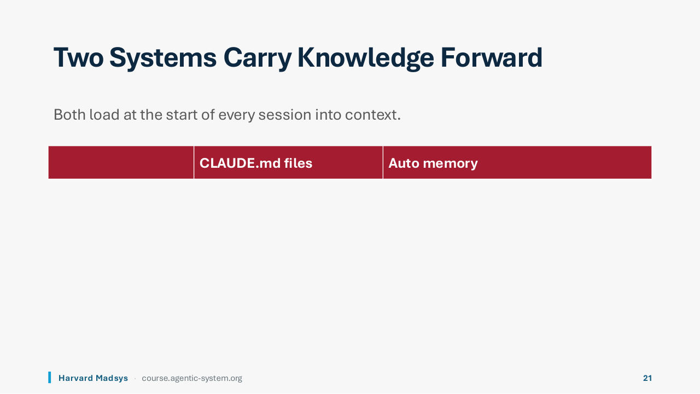
两套系统负责把知识带到下一次
两者都在每次会话开始时加载进上下文。
| CLAUDE.md 文件 | 自动记忆（Auto memory） | |
|---|---|---|
| 由谁编写 | 你 | Claude |
| 内容 | 指令与规则 | 经验与模式 |
| 作用范围 | 项目、用户或组织 | 每个仓库一份，多个 worktree 共享 |
| 加载时机 | 每个会话 | 每个会话（前 200 行 / 25KB） |
| 用途 | 规范、工作流、架构 | 你的偏好、纠正、项目背景 |
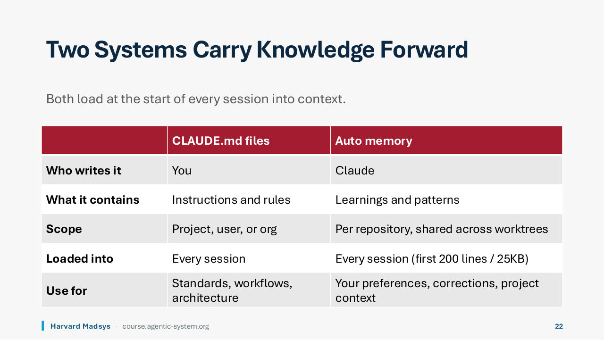
两套系统负责把知识带到下一次
（同上页，强调对比）
| CLAUDE.md 文件 | 自动记忆（Auto memory） | |
|---|---|---|
| 由谁编写 | 你 | Claude |
| 内容 | 指令与规则 | 经验与模式 |
| 作用范围 | 项目、用户或组织 | 每个仓库一份，多个 worktree 共享 |
| 加载时机 | 每个会话 | 每个会话（前 200 行 / 25KB） |
| 用途 | 规范、工作流、架构 | 你的偏好、纠正、项目背景 |
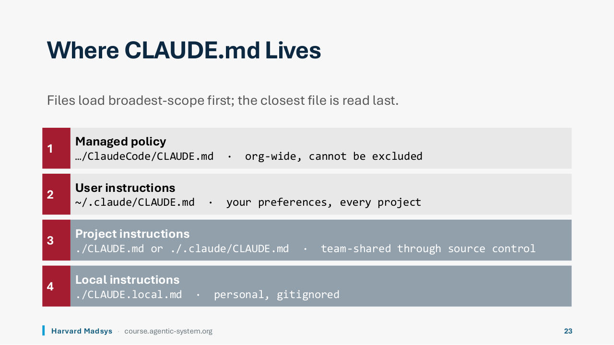
CLAUDE.md 放在哪里
按作用范围从大到小加载，离当前目录最近的文件最后读取。
- 托管策略：
…/ClaudeCode/CLAUDE.md——组织范围，无法排除 - 用户指令：
~/.claude/CLAUDE.md——你的个人偏好，作用于所有项目 - 项目指令：
./CLAUDE.md或./.claude/CLAUDE.md——通过版本控制与团队共享 - 本地指令：
./CLAUDE.local.md——个人使用，被 gitignore
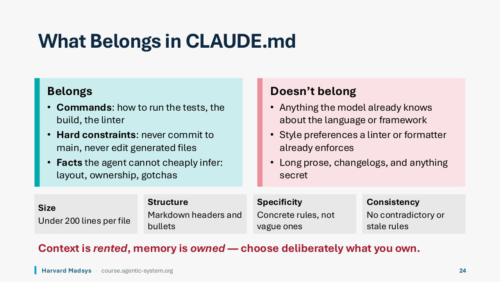
CLAUDE.md 里该写什么
- 篇幅：每个文件不超过 200 行
- 结构：Markdown 标题和列表
- 具体：具体的规则，而不是含糊的
- 一致：没有相互矛盾或过时的规则
该写的
- 命令：怎么跑测试、构建、linter
- 硬约束：绝不直接提交到 main、绝不编辑生成的文件
- 智能体无法低成本推断的事实：目录结构、归属、坑点
不该写的
- 模型本来就知道的语言或框架知识
- linter 或格式化工具已经强制的风格偏好
- 长篇大论、更新日志，以及任何机密信息
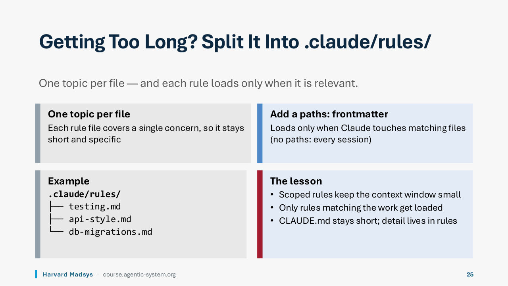
太长了？拆到 .claude/rules/ 里
每个文件一个主题——每条规则只在相关时才加载。
- 一个文件一个主题：每个规则文件只管一件事，保持简短具体
- 加上
paths:前置元数据：只有当 Claude 碰到匹配的文件时才加载（不写 paths 则每个会话都加载）
.claude/rules/
├── testing.md
├── api-style.md
└── db-migrations.md要点
- 限定范围的规则让上下文窗口保持精简
- 只加载与当前工作匹配的规则
- CLAUDE.md 保持简短，细节放在 rules 里
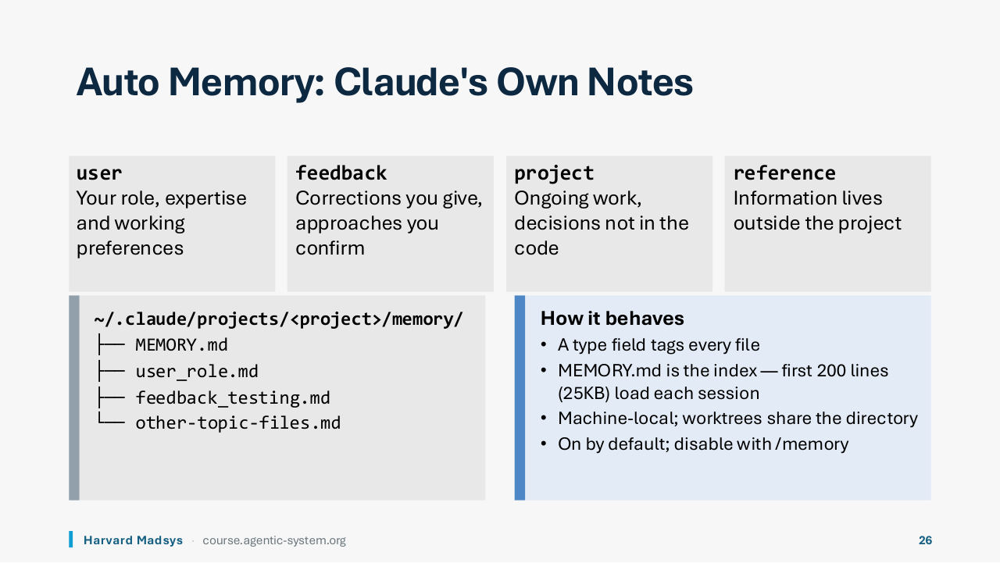
自动记忆：Claude 自己的笔记
- user：你的角色、专长与工作偏好
- feedback：你给出的纠正、你认可的做法
- project：进行中的工作、代码里看不出的决策
- reference：存放在项目之外的信息
~/.claude/projects/<project>/memory/
├── MEMORY.md
├── user_role.md
├── feedback_testing.md
└── other-topic-files.md它的行为方式
- 每个文件用 type 字段标注类型
- MEMORY.md 是索引——每个会话加载前 200 行（25KB）
- 仅存在本机；各 worktree 共享同一目录
- 默认开启；可用 /memory 关闭
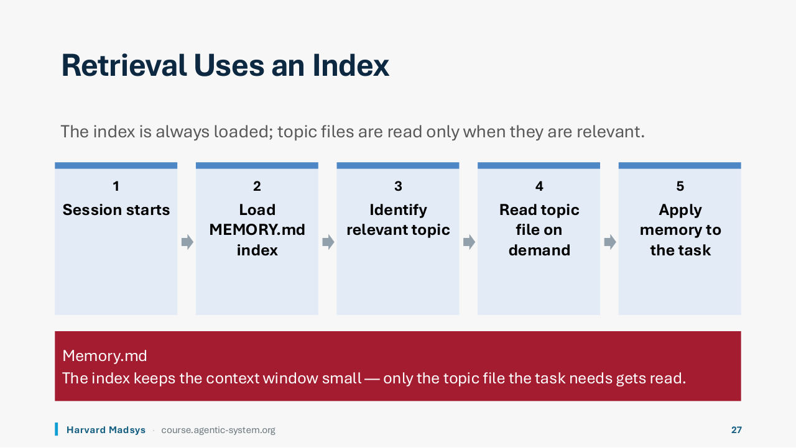
检索依靠索引
索引始终加载；主题文件只在相关时才读取。
会话开始 → 加载 MEMORY.md 索引 → 识别相关主题 → 按需读取主题文件 → 把记忆应用到任务上
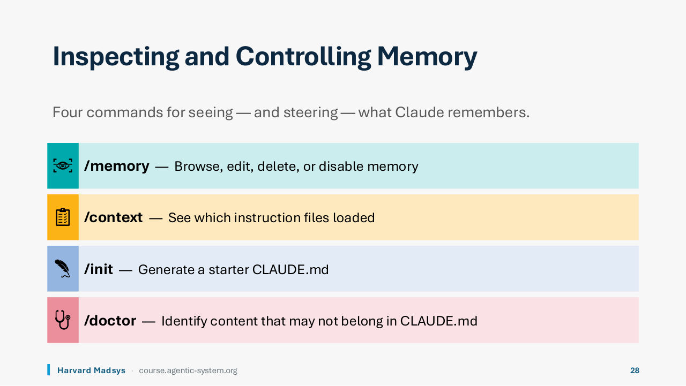
查看与控制记忆
四个命令，用来查看并引导 Claude 记住什么：
/memory——浏览、编辑、删除或关闭记忆/context——查看加载了哪些指令文件/init——生成一份初始 CLAUDE.md/doctor——找出可能不该放进 CLAUDE.md 的内容
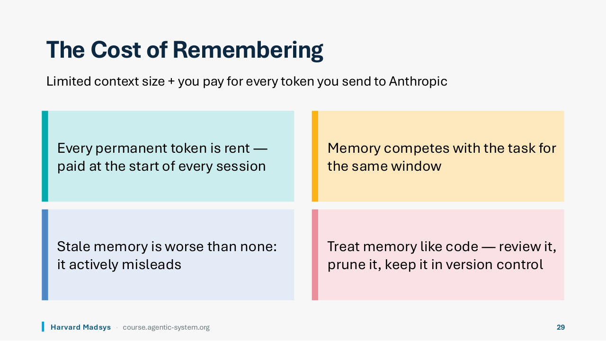
记忆的代价
- 每一个永久 token 都是“房租”——在每个会话开始时支付
- 记忆和任务争夺同一个上下文窗口
- 过时的记忆比没有记忆更糟：它会主动误导
- 像对待代码一样对待记忆——审查它、修剪它、纳入版本控制
工具与记忆赋予智能体能力
（图：智能体 = LLM + 记忆 + 推理与规划；通过工具/动作作用于环境，从环境获得观察）
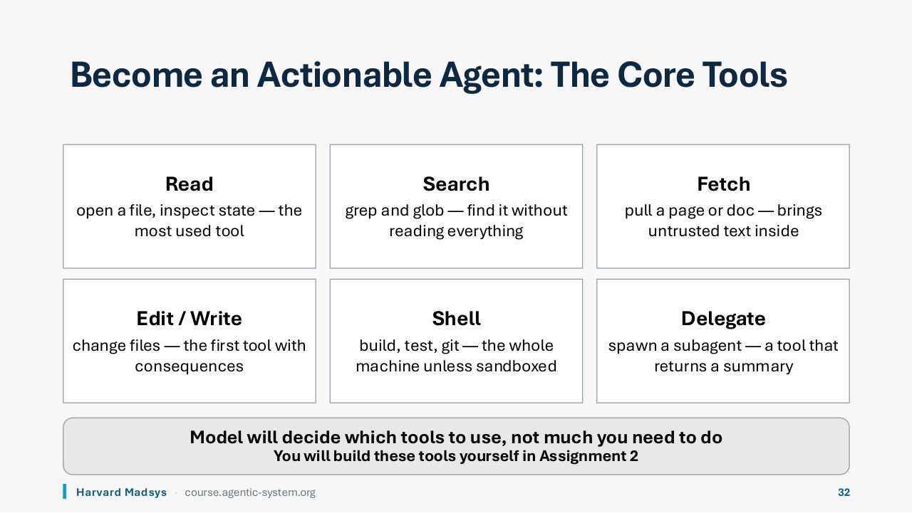
成为能行动的智能体：核心工具
- Read：打开文件、检查状态——最常用的工具
- Search：grep 和 glob——不必通读一切就能找到目标
- Fetch：拉取网页或文档——会把不可信文本带进来
- Edit / Write：修改文件——第一个会产生后果的工具
- Shell：构建、测试、git——除非有沙箱，否则相当于整台机器
- Delegate：派生子智能体——一个返回摘要的工具
在作业 2 中，你将亲手实现这些工具。
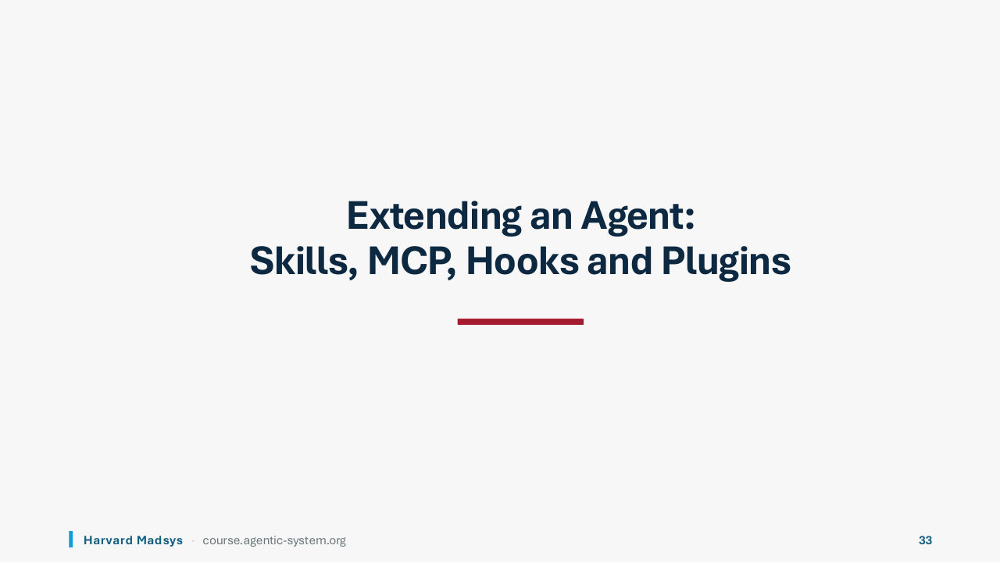
扩展智能体：Skills、MCP、Hooks 与插件
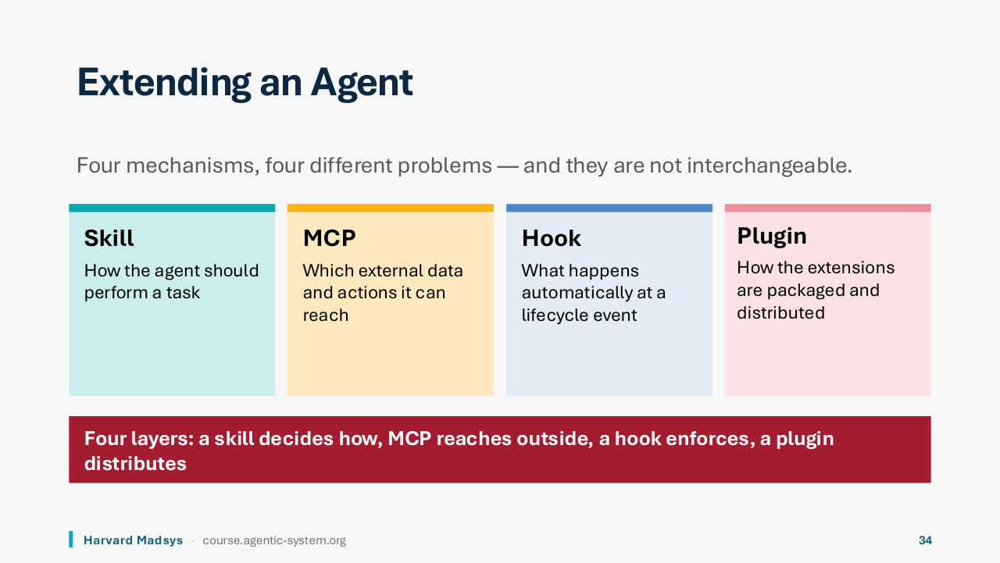
扩展智能体
四种机制，解决四种不同的问题——它们不能互相替代。
- Skill：智能体应当如何完成一项任务
- MCP：它能触达哪些外部数据和动作
- Hook：在某个生命周期事件发生时自动执行什么
- Plugin（插件）：扩展如何被打包和分发
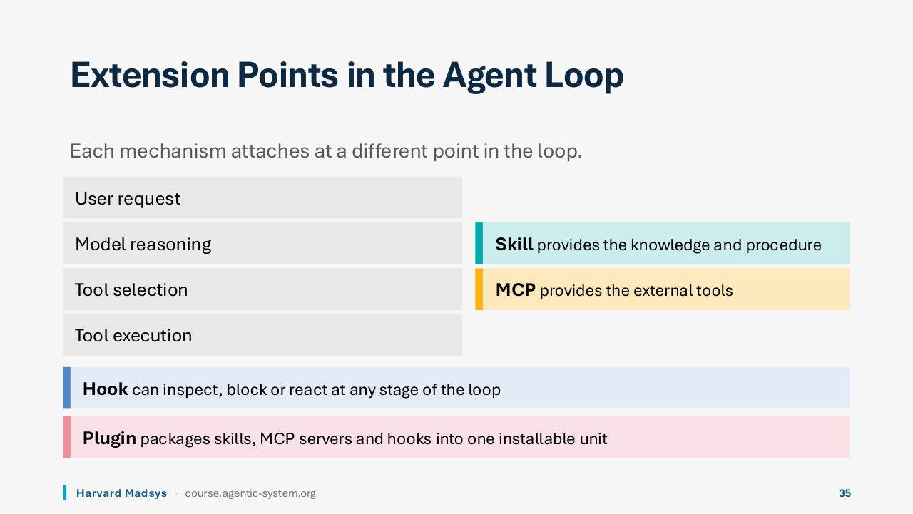
智能体循环中的扩展点
每种机制挂接在循环的不同位置：
- 用户请求
- 模型推理 ← Skill 提供知识和流程
- 工具选择 ← MCP 提供外部工具
- 工具执行
- Hook 可以在循环的任何阶段进行检查、拦截或响应
- 插件把 Skills、MCP 服务器和 Hooks 打包成一个可安装的单元
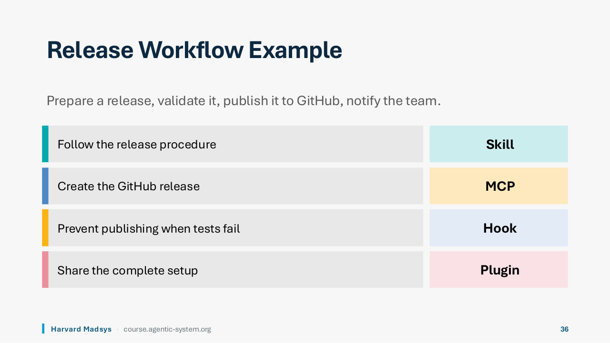
示例：发布流程
准备一个版本、验证它、发布到 GitHub、通知团队。
- 按发布流程操作 → Skill
- 创建 GitHub release → MCP
- 测试失败时阻止发布 → Hook
- 共享整套配置 → 插件
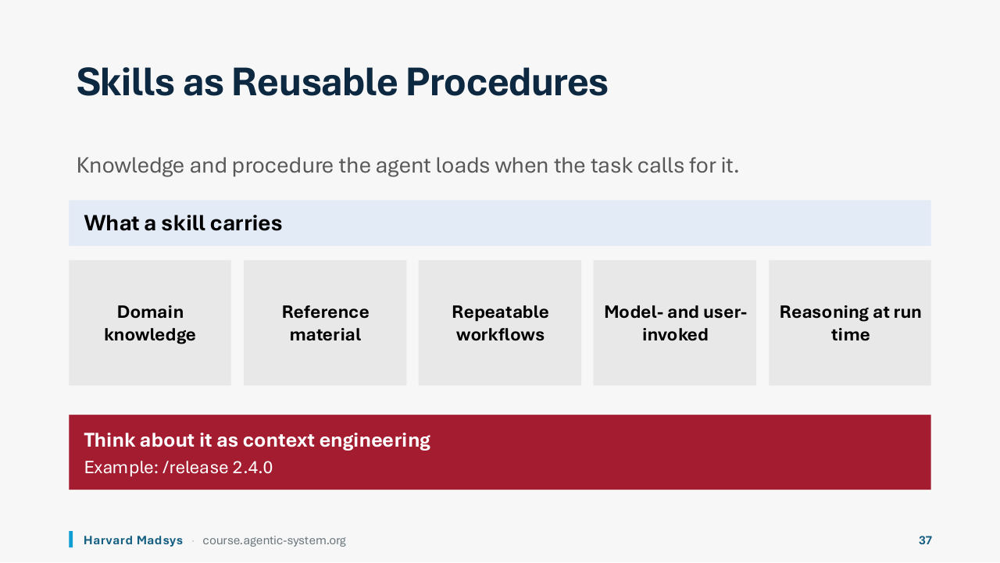
Skill：可复用的流程
当任务需要时，智能体加载的知识与流程。
一个 Skill 携带：
- 领域知识
- 参考资料
- 可重复的工作流
- 可由模型调用，也可由用户调用
- 运行时推理
例如：/release 2.4.0
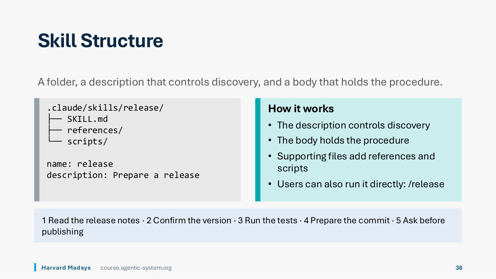
Skill 的结构
一个文件夹；一段控制“何时被发现”的描述；一段承载流程的正文。
.claude/skills/release/
├── SKILL.md
├── references/
└── scripts/
name: release
description: Prepare a release工作方式
- description 控制发现
- 正文承载流程
- 辅助文件提供参考资料和脚本
- 用户也可以直接运行：
/release
正文示例：1 阅读发布说明 · 2 确认版本号 · 3 运行测试 · 4 准备提交 · 5 发布前先询问
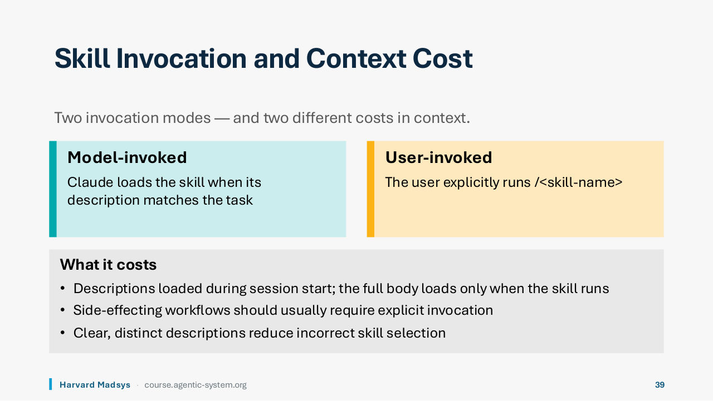
Skill 的调用方式与上下文成本
两种调用方式——两种不同的上下文成本。
- 模型调用：当描述与任务匹配时，Claude 加载该 Skill
- 用户调用：用户显式运行
/<skill-name>
成本
- 描述在会话启动时加载；完整正文只在 Skill 运行时才加载
- 有副作用的工作流通常应要求显式调用
- 清晰、互相区分的描述能减少选错 Skill
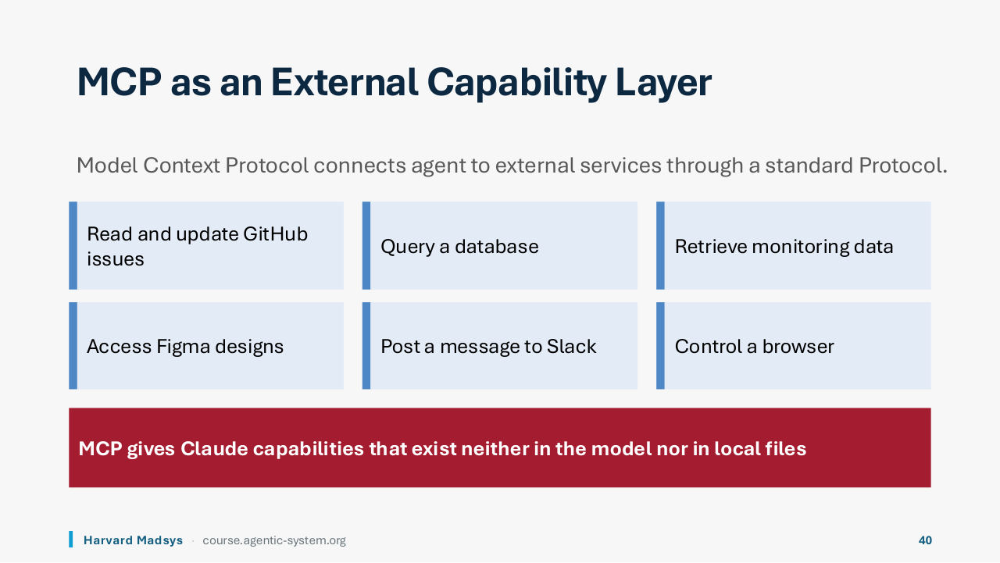
MCP：外部能力层
模型上下文协议（Model Context Protocol）通过标准协议把智能体连接到外部服务：
- 读取和更新 GitHub issue
- 查询数据库
- 获取监控数据
- 访问 Figma 设计稿
- 向 Slack 发消息
- 控制浏览器
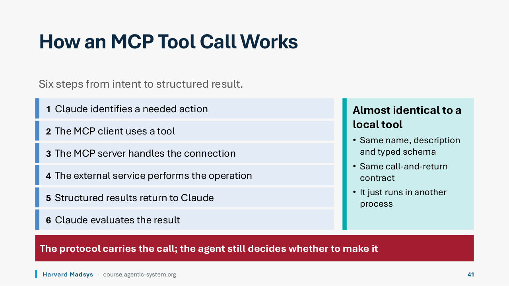
一次 MCP 工具调用如何进行
从意图到结构化结果的六步：
- Claude 识别出需要执行的动作
- MCP 客户端调用一个工具
- MCP 服务器处理连接
- 外部服务执行操作
- 结构化结果返回给 Claude
- Claude 评估结果
几乎和本地工具一样
- 同样有名称、描述和类型化的 schema
- 同样的“调用—返回”约定
- 只是运行在另一个进程里
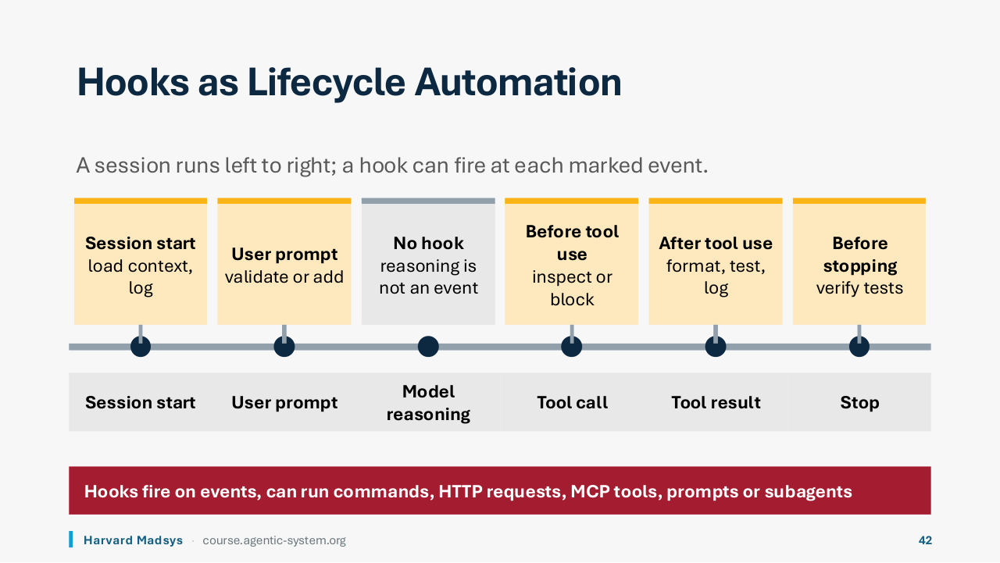
Hook：生命周期自动化
会话从左到右推进；在每个标记的事件处都可以触发 Hook：
- 会话开始：加载上下文、记录日志
- 用户提示词：校验或补充
- 工具调用前：检查或拦截
- 工具调用后：格式化、测试、记录日志
- 停止前：验证测试
- 模型推理：没有 Hook——推理不是一个事件
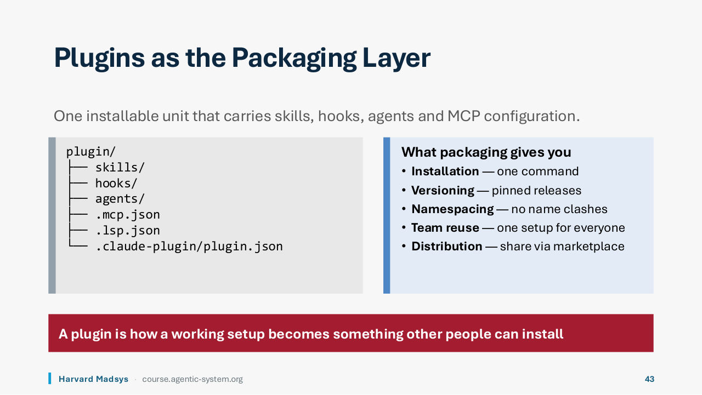
插件：打包层
一个可安装单元，包含 Skills、Hooks、智能体和 MCP 配置。
plugin/
├── skills/
├── hooks/
├── agents/
├── .mcp.json
├── .lsp.json
└── .claude-plugin/plugin.json打包带来的好处
- 安装——一条命令
- 版本管理——锁定版本
- 命名空间——避免重名冲突
- 团队复用——所有人用同一套配置
- 分发——通过插件市场共享
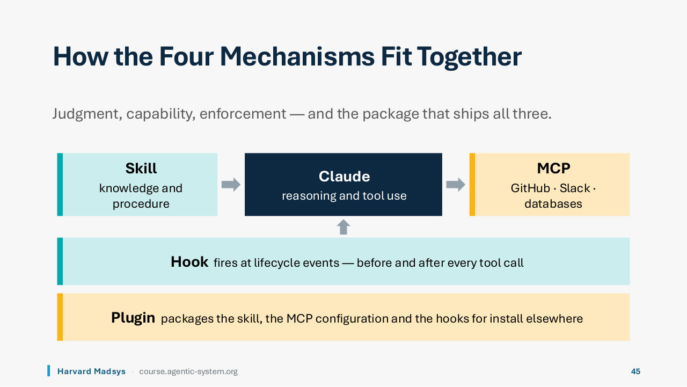
四种机制如何配合
判断、能力、强制——以及把三者一起交付的包。
- Skill：知识与流程
- Claude：推理与工具使用
- MCP：GitHub · Slack · 数据库
- Hook：在生命周期事件上触发——每次工具调用前后
- 插件：把 Skill、MCP 配置和 Hooks 打包，以便在别处安装
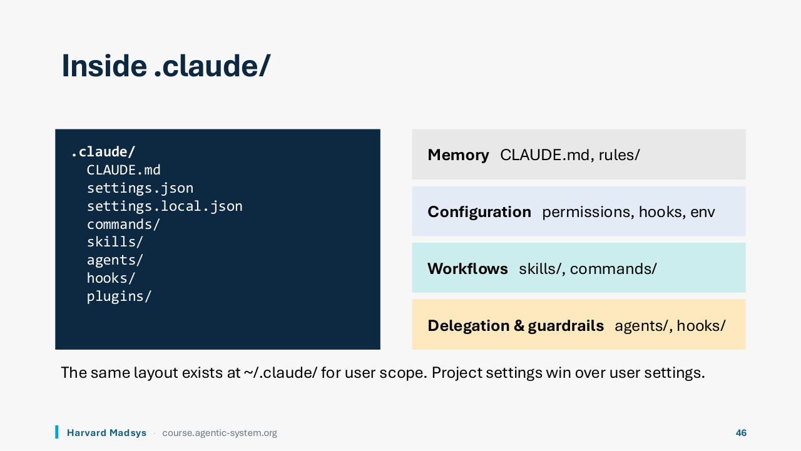
.claude/ 目录里有什么
.claude/
CLAUDE.md
settings.json
settings.local.json
commands/
skills/
agents/
hooks/
plugins/- 记忆：CLAUDE.md、rules/
- 配置：权限、hooks、环境变量
- 工作流：skills/、commands/
- 委派与护栏：agents/、hooks/
~/.claude/ 下有同样的布局。项目设置优先于用户设置。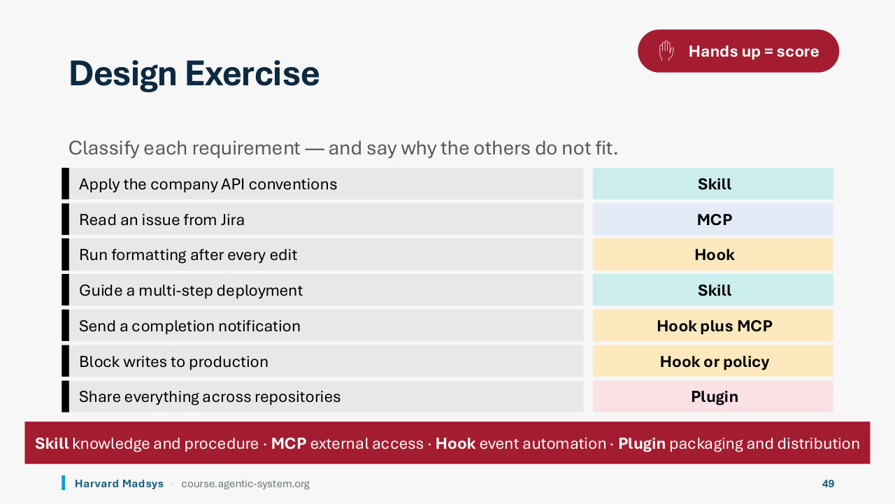
设计练习
给每条需求归类——并说明为什么其他机制不合适。（举手 = 得分）
- 应用公司的 API 规范 → Skill
- 从 Jira 读取一个 issue → MCP
- 每次编辑后自动格式化 → Hook
- 引导一次多步骤部署 → Skill
- 发送完成通知 → Hook + MCP
- 禁止写入生产环境 → Hook 或策略
- 在多个仓库之间共享全部配置 → 插件
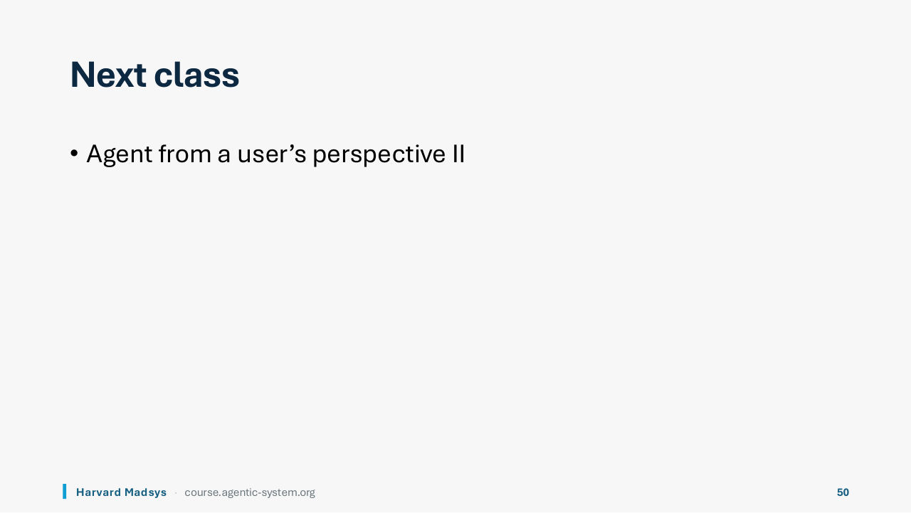
下节课
- 用户视角下的智能体 II
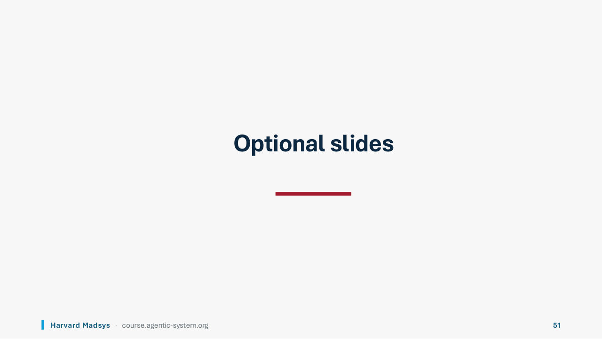
选读幻灯片
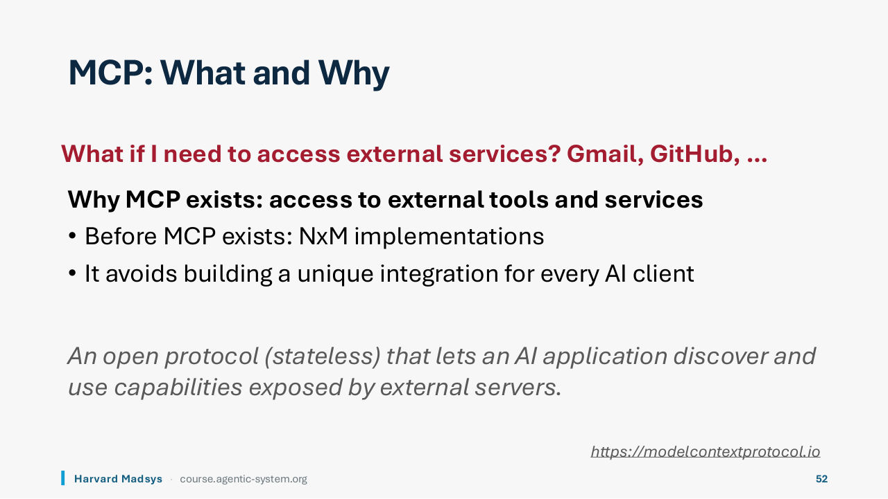
MCP：是什么，为什么
如果我需要访问外部服务怎么办？Gmail、GitHub……
为什么需要 MCP：访问外部工具与服务
- 在 MCP 出现之前：需要 N×M 种实现
- 它避免了为每个 AI 客户端单独构建一套集成
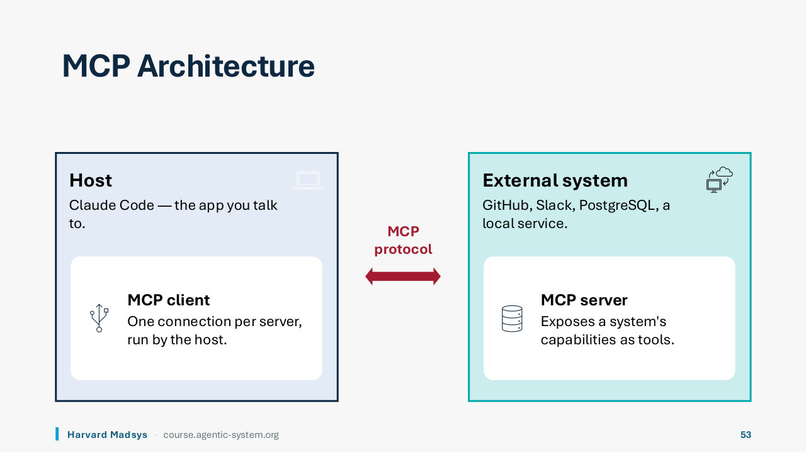
MCP 架构
- Host（宿主）：Claude Code——你与之对话的应用
- MCP 客户端：每个服务器一个连接，由宿主运行
- MCP 协议
- MCP 服务器：把某个系统的能力暴露为工具
- 外部系统：GitHub、Slack、PostgreSQL、某个本地服务
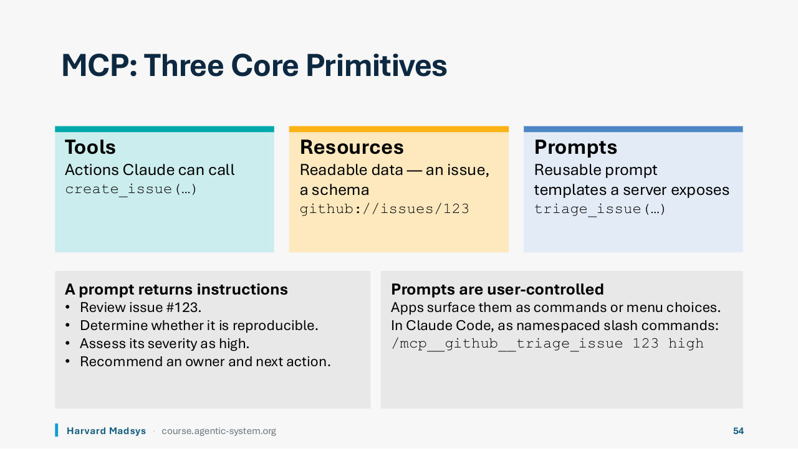
MCP 的三大核心原语
- Tools（工具）：Claude 可以调用的动作，如
create_issue(…) - Resources（资源）：可读取的数据——一个 issue、一个 schema，如
github://issues/123 - Prompts（提示词）：服务器暴露的可复用提示词模板，如
triage_issue(…)
一个 Prompt 返回一组指令：
- 审查 issue #123
- 判断它是否可复现
- 将其严重程度评为高
- 推荐负责人和下一步行动
Prompts 由用户控制：应用会把它们呈现为命令或菜单项。在 Claude Code 中，它们是带命名空间的斜杠命令：
/mcp__github__triage_issue 123 high
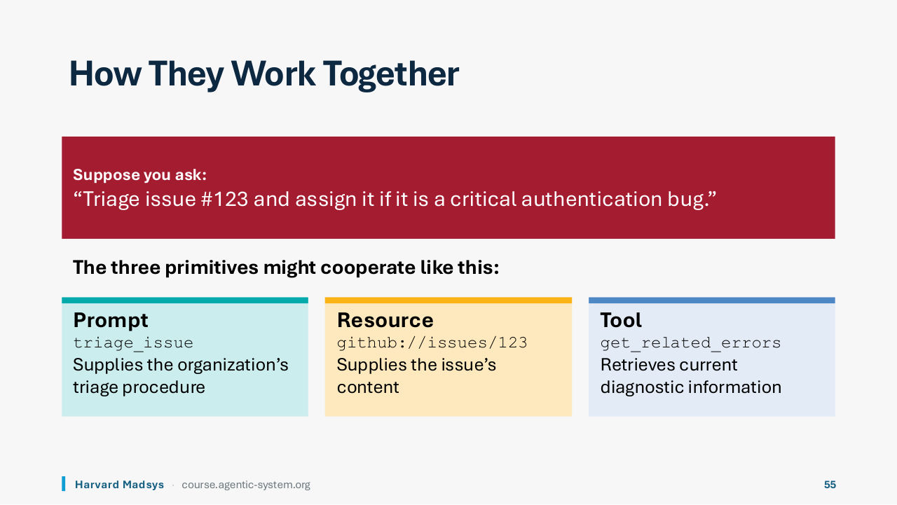
它们如何协同
假设你问：“分诊 issue #123，如果是严重的鉴权 bug 就指派出去。”
三种原语可能这样合作：
- Prompt
triage_issue：提供组织的分诊流程 - Resource
github://issues/123：提供 issue 的内容 - Tool
get_related_errors：获取当前的诊断信息
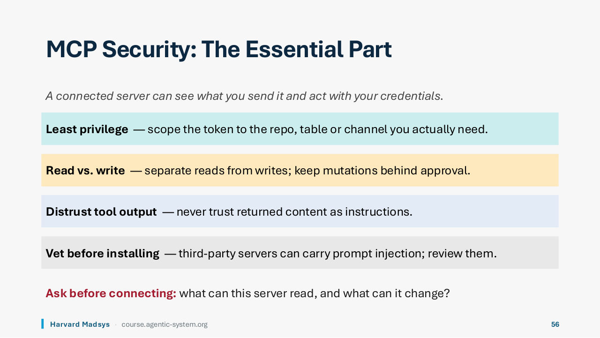
MCP 安全：最关键的部分
一个已连接的服务器能看到你发给它的内容，并以你的凭证行事。
- 最小权限——把 token 的范围限定在你真正需要的仓库、表或频道
- 读写分离——把读和写分开；变更操作需要审批
- 不信任工具输出——绝不把返回内容当作指令
- 安装前审查——第三方服务器可能携带提示词注入；先审查
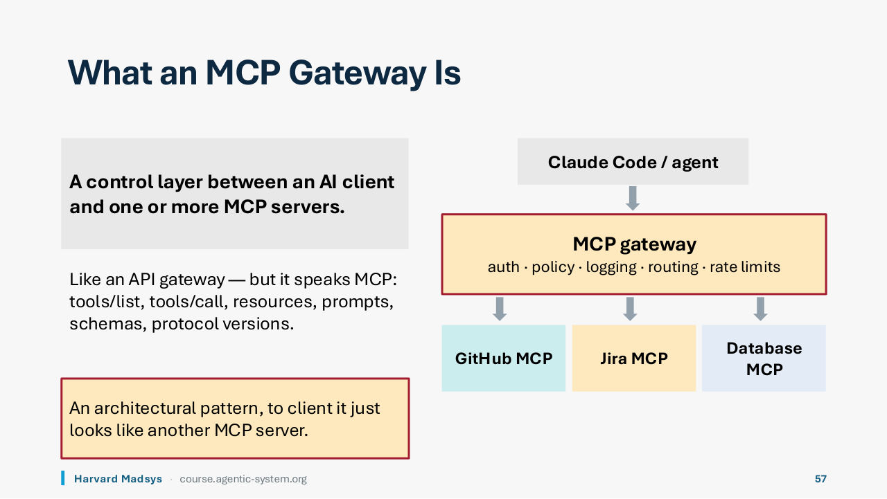
什么是 MCP 网关
位于 AI 客户端与一个或多个 MCP 服务器之间的控制层。
- 类似 API 网关——但它说的是 MCP：tools/list、tools/call、resources、prompts、schemas、协议版本
- 它是一种架构模式；对客户端来说，它看起来就是另一个 MCP 服务器
（图：Claude Code / 智能体 → MCP 网关〔鉴权 · 策略 · 日志 · 路由 · 限流〕→ GitHub MCP / Jira MCP / 数据库 MCP）
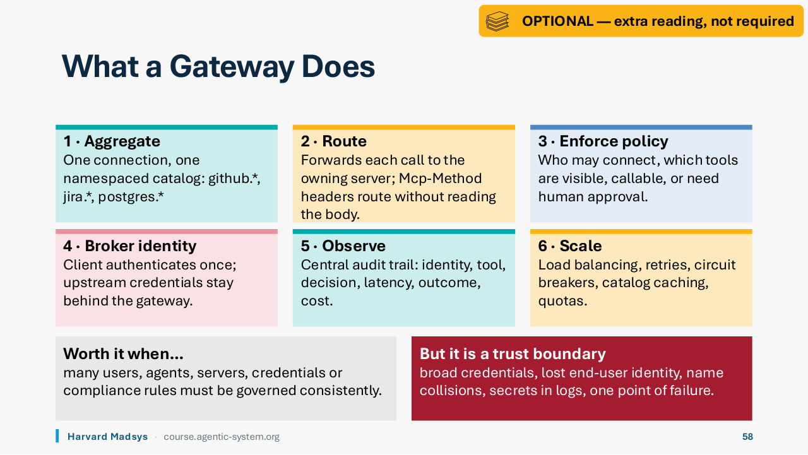
网关做什么
- 聚合：一个连接、一个带命名空间的目录：github.\*、jira.\*、postgres.\*
- 路由：把每次调用转发给所属服务器；
Mcp-Method头让网关无需读取请求体即可路由 - 执行策略：谁可以连接，哪些工具可见、可调用或需要人工审批
- 代理身份：客户端只认证一次；上游凭证留在网关之后
- 可观测：集中的审计记录——身份、工具、决策、延迟、结果、成本
- 扩展：负载均衡、重试、熔断、目录缓存、配额
值得用的场景：大量用户、智能体、服务器、凭证或合规规则需要统一治理时。
但它是一个信任边界：宽泛的凭证、终端用户身份丢失、名称冲突、日志中泄露机密、单点故障。
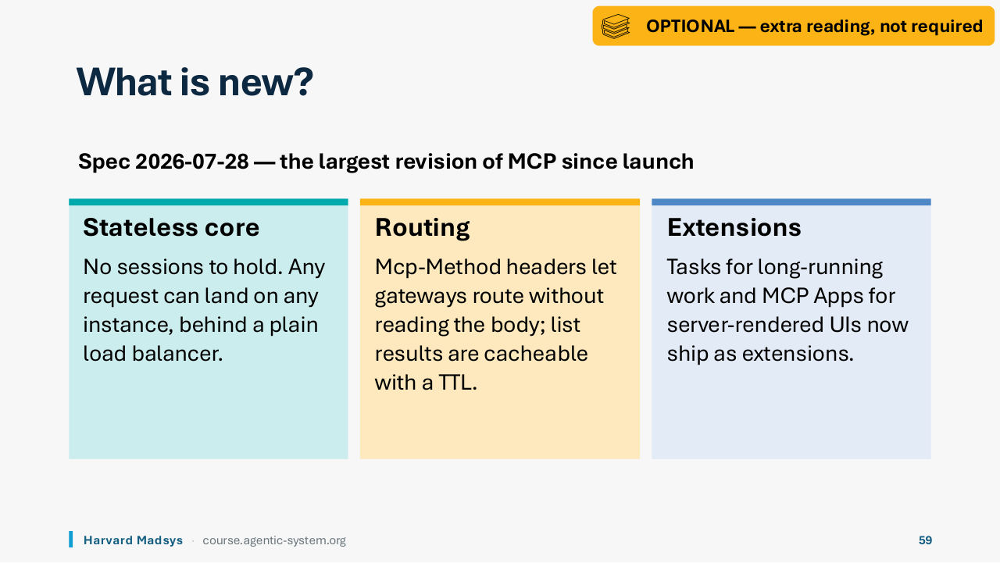
有什么新变化？
规范 2026-07-28——MCP 发布以来最大的一次修订
- 无状态核心：不需要保持会话。任何请求都可以落到任意实例上，放在普通负载均衡器后面即可。
- 路由：
Mcp-Method头让网关无需读取请求体即可路由；list 结果可按 TTL 缓存。 - 扩展：用于长时间任务的 Tasks，以及用于服务端渲染 UI 的 MCP Apps，现在以扩展形式提供。